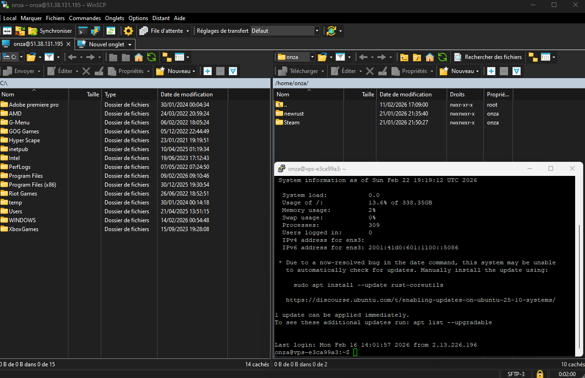

La création et la gestion d’un serveur Rust implique la mise en place d’une infrastructure dédiée et l’administration des fichiers du serveur. Pour ce projet, la machine hébergeant le serveur a été configurée et gérée à distance à l’aide de WinSCP, un client SFTP/FTP sécurisé.
Cette partie, je l’ai réalisée moi-même : c’est sur cette base que le serveur a d’abord tourné, avant que mon associé la fasse évoluer (voir en bas de page).
sudo systemctl stop rust-modded-1 pour stopper le serveur, ou sudo systemctl start rust-modded-1 pour le relancer).Tout ce processus permet de déployer, configurer et maintenir un serveur Rust opérationnel tout en garantissant la sécurité, la stabilité et la possibilité d’une mise à jour rapide.
Pour le lancement, mon associé a fait évoluer cette première version vers une infrastructure conteneurisée, plus simple à automatiser :
Avoir d’abord tout fait à la main m’a permis de comprendre précisément ce que ces outils automatisent : l’arborescence d’un serveur, les fichiers de configuration, l’ordre des opérations lors d’une mise à jour.